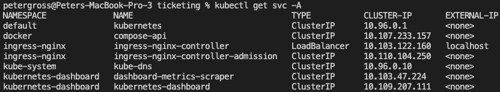
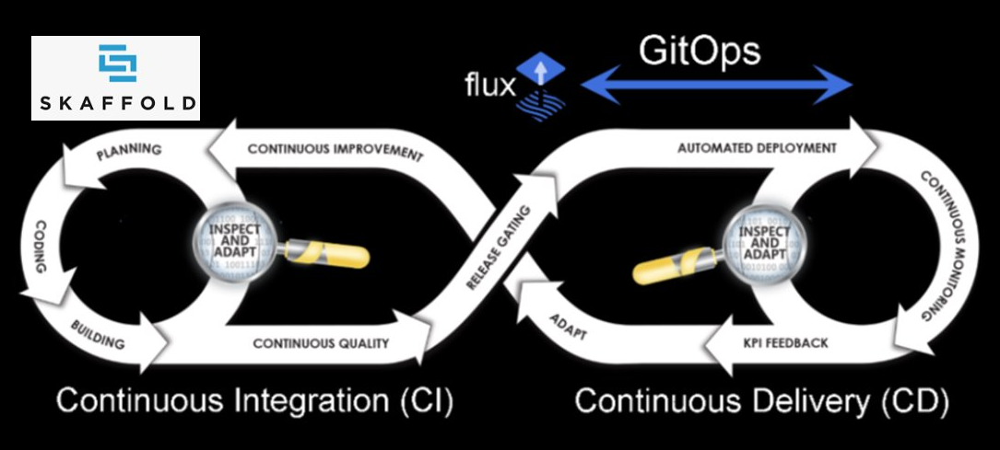

Kubernetes
1) The ingress manifest file is built for the NGINX Ingress Controller so you have to follow the install instructions for your kubernetes platform
2) We need to create the secrets in the cluster before we install our deployments
If you are using your own private repository for your docker images
kubectl create secret docker-registry regcred --docker-server=<repository> --docker-username='*******' --docker-password='************'
We now need to setup the secrets that our manifest files use
kubectl create secret generic stripe-secret --from-literal STRIPE_KEY=<key>
kubectl create secret generic jwt-secret --from-literal=JWT_KEY='<key>'
3) Update your hosts file to point ticketing.dev to your cluster (for docker for desktop this is 127.0.0.1)
On mac and linux the hosts file is at /etc/hosts and on windows it is at C:\Windows\System32\Drivers\etc\hosts
DockerHub
I have placed the images used in the Kubernetes manifest files and skaffold config in a public repository, but if you want to experiment and add to the code (not difficult I tried to keep it simple), then you will have to create your own dockerhub account and change the image settings in these config files.
NPM Repository
Again like the Dockerhub settings, I have made my npm module public, but if you want to change or experiment with the common module you will have to create your own npm account and replace all of the
import { ... } from "@msexample/common"
with
import { ... } from "@<yourorganisation>/common"
Stripe Keys
In this project I have used stripe in free development mode, but you will have to use your own keys and update the Kubernetes secret as defined above for the private key and place your public key in the config.yaml in the infra directory.
Check the config
The client needs to talk directly to the loadbalancer when rendering on the server, so you must make sure the SERVER_URL_BASE points to your load balancer in the /infra/k8s-dev/config.yaml file
The format should be "http://<Loadbalancer Name>.<Namespace>.svc.cluster.local"
e.g. on my docker for desktop kubernetes cluster

Which means that the config should be setup with
SERVER_URL_BASE: "http://ingress-nginx-controller.ingress-nginx.svc.cluster.local"
Automation
What I am aiming for is a flow like this

Where we are using Skaffold in the local devlopment environment, to allow the developer to quickly iterate through the coding and testing cycles.
I will then implement a GitOps implementation using flux which we install in our kubernetes cluster and will always keep the environment aligned with the version control repository (officially known as GitOps). Flux has been made open source and donated to the CNCF by weaveworks.
The Skaffold file has already been included in the github repository, and when I get the flux implementation working, I will include those files as well.
{kind=link}
{kind=link}
{kind=link}